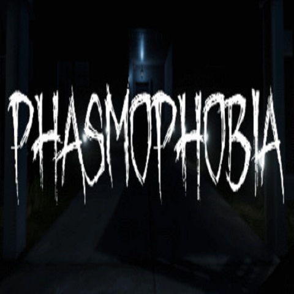

|  |
El jugador toma el control de un miembro de un grupo de hasta cuatro jugadores, en los roles de cazadores de fantasmas exploradores urbanos , que son contratados para lidiar con fantasmas que habitan diferentes instalaciones abandonadas como hogares , escuelas , prisiones y hospitales . El juego presenta 12 variedades diferentes de fantasmas, cada una de las cuales se comporta de manera diferente. Para saber qué tipo de fantasma han encontrado, los jugadores deben recolectar evidencia sobre el fantasma. El objetivo final del juego no es derrotar a los fantasmas, sino recopilar suficiente información sobre ellos, mientras que al final de cada misión se paga a los jugadores. Los jugadores se comunican a través del chat de voz , al que el fantasma mismo escucha y reacciona. Los jugadores pueden usar diferentes equipos para ayudar en su misión, como linternas UV , termómetros , lectores EMF , cámaras CCTV , crucifijos y tablas Ouija . Estas herramientas se pueden utilizar para diferentes medios, como la comunicación, la investigación, la protección y la recopilación de pistas. |